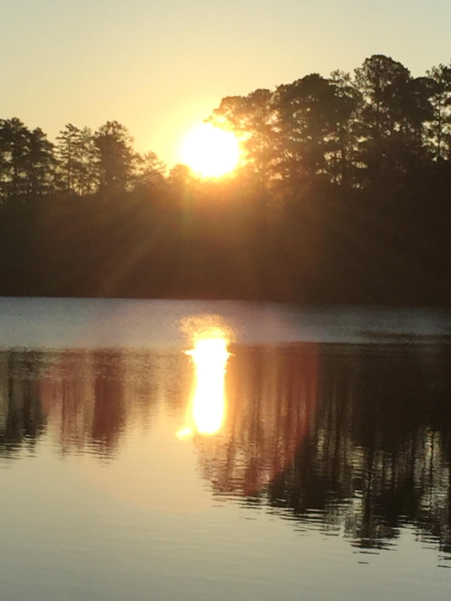
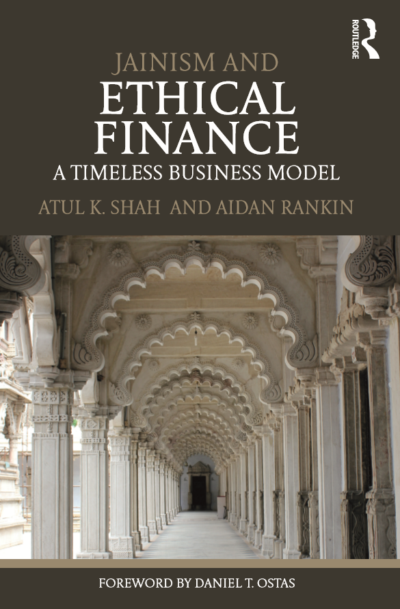

My tryst with wild balsams began in the late 1990s when a young botanist took me to the western Upper Nilgiris to view the flowering spectacle that unfolds in September. I was fascinated by the shape and colors of these balsams (the genus Impatiens) and the fact that many were endemic to just a few hillsides and were seen nowhere else on planet earth. As I learned more about these plants, I also realized that
...
ery little had been documented about many of these species since their Types were collected by the British many decades earlier.
Later, we began to carry out annual botanical expeditions into the western edges of the Nilgiris plateau. In 2006, we were honored to have with us Dr. Michael Tobias, the President of DSF, on a three-day trip. On that hike, he also saw an unidentified balsam that would later be described as a new species – Impatiens taihmushkulni, since it was found growing on the slopes of Mount Taihmushkuln, from where the Toda (the indigenous people of the Upper Nilgiris) God Aihhn rules the afterworld, Amunawdr.
Michael Tobias
Posted on March 24, 2017

In the Winter and Spring of 2016, 80 people wandered throughout the 83-acre Lake Laurel Outdoor Environmental Research Lab in Milledgevile, Georgia.
The resulting 50-minute film, “bioreverie,” is an insider’s glimpse of their metaphysical encounters, artistic and philosophical epiphanies, and candid contemplations. It also yields a stirring window on the reality of just how precious is a protected small lake and piece of surrounding turf in Central Georgia. And, by obvious implication, recognizes that every inch of this planet of life should impress upon us all the profound needs of
...
ery little had been documented about many of these species since their Types were collected by the British many decades earlier.
Later, we began to carry out annual botanical expeditions into the western edges of the Nilgiris plateau. In 2006, we were honored to have with us Dr. Michael Tobias, the President of DSF, on a three-day trip. On that hike, he also saw an unidentified balsam that would later be described as a new species – Impatiens taihmushkulni, since it was found growing on the slopes of Mount Taihmushkuln, from where the Toda (the indigenous people of the Upper Nilgiris) God Aihhn rules the afterworld, Amunawdr.
Atul K. Shah
Posted on January 17, 2017

Someone, somehow, discovered that the new British five pound note, made of plastic, used ink which had beef tallow/animal fat. They were animal welfare activists, and caused a storm gathering over 100000 signatures and eventually, the Bank of England had to apologise, and guaranteed that future notes will not have any animal ingredients. I was interviewed on this theme by both BBC radio and television, as they were keen to get a Jain perspective. Being media, all they were looking for was a soundbite, though for me there was a much deeper story here.
...
It also happens that I am an active writer and researcher on Ethical Finance, partly inspired by my first meeting with the eminent writer, scientist and film-maker Dr. Michael Tobias 25 years ago. He has always been most respectful and encouraging of Jain culture and science. In our rush to modernise, we have lost so much wisdom and science from our past, and replaced it with fraudulent and violent theories and practices.